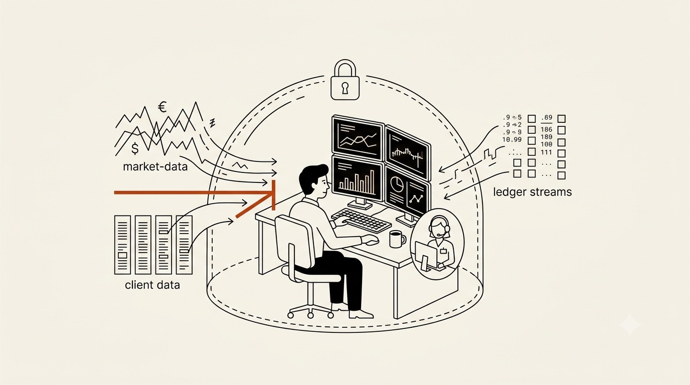

Chapter 03 · Domain One
Finance: Desks & the BYOK Data Room
Finance is the perfect first stop because it lights up every question on the Lens and has the budget to match. The whole industry runs on private data it is contractually forbidden to hand to a vendor, on actions that are expensive to get wrong, and on an audit trail that must survive a regulator's subpoena. A generic chatbot is a non-starter here. A harness you own, running on your keys, is a procurement conversation.

A refined flat-vector editorial illustration on a warm off-white background: a trading-desk analyst at a multi-monitor terminal, with a translucent vault boundary drawn around the desk labelled by a lock glyph, and a small agent icon working strictly inside the boundary — market-data and ledger streams flow in, but a bright rust-orange line marks where client data cannot cross outward. Single rust accent (#b0451d) over ink and paper, clean geometry, calm and precise, generous whitespace, no text baked in. Target size ~1280×720px, 16:9 landscape; the art is letterboxed into a 16:9 box, so keep the desk and vault centred with safe margins.
Generate this with your image agent, then drop the file here.
The plays
An interactive-mode harness with extensions that add tools over your market-data feed, your internal research archive, and your position book. The analyst asks in plain language; the agent pulls live figures, cross-references the private research RAG, and drafts the note — citing the exact internal documents, because you wrote the retrieval tool. The edge isn't the model; it's that it can see your proprietary data that no public assistant can.
Risk — market-data licensing terms; make the retrieval tool enforce entitlements.
Headless print/JSON mode turns the harness into a batch worker. Point it at two ledgers — internal book versus custodian statement — with a custom "diff-explain" tool. It doesn't just flag the breaks; it reads the surrounding transactions and writes a plain-English cause for each. Runs on a schedule, emits JSON your systems ingest, escalates only the genuinely ambiguous breaks to a human.
Risk — never let it auto-post adjustments; it drafts, a human approves.
Add a permission-gate extension that intercepts every tool call, logs it with who/what/why, and requires approval for anything that writes. Now every action the agent takes is a signed, replayable record — the thing compliance actually buys. In a domain with no built-in permission system (see chapter 9), the gate you build is the compliance product.
Risk — the gate must be un-bypassable; treat it as a security boundary, tested.
Why BYOK is the whole sale
Ask any bank CISO why they've said no to an AI vendor and the answer is data egress. Pi's bring-your-own-key model means the client data path runs from your infrastructure to the model provider on your account under your enterprise agreement — earendil-works is never in the loop. Combine that with a containerized deployment (chapter 9) and you can honestly tell a regulator: the desk's data stays in the desk's environment. That sentence is worth more than any model benchmark.
Sell governed capability, not intelligence. The bank already believes the model is smart; what they can't buy off the shelf is a smart thing that touches their ledgers, cites their private research, logs every action, and never leaks a byte. That composite is a reshapeable harness with four extensions — and a moat competitors can't clone without your data and your workflow.
This is regulated territory. Nothing here is investment advice tooling you can ship without compliance review, model-risk governance, and human-in-the-loop on every consequential action. The harness makes the build fast; it does not make the obligations disappear.
Sources Pi capabilities: custom tools, RAG/custom retrieval, permission gates, print/JSON mode, BYOK auth (pi.dev/docs/latest; github.com/earendil-works/pi). Domain framing is the author's; obligations are jurisdiction-specific.